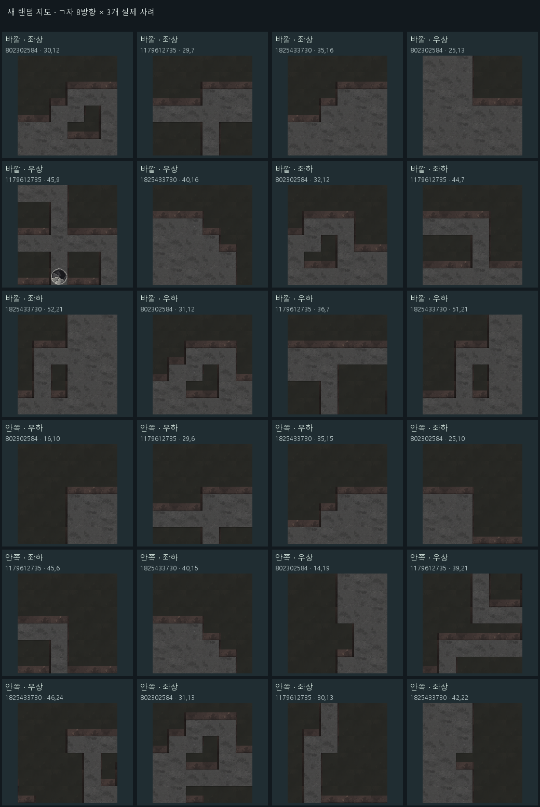

잔향도시 · 새 랜덤 128맵 ㄱ자 점검
새 지도 128개모서리 55,185곳이웃 배치 256가지 검사추가 규칙 위반 0건
실제 생성된 모든 벽을 게임용 타일과 대조했습니다. 아래에서 각 지도를 확대하거나 방향별 모서리와 실제 이웃 배치를 확인할 수 있어요.
지도 불러오는 중…
벽을 누르면 해당 위치를 확대합니다. 방향키로 시점을 이동할 수 있어요.
방향별 모서리 · 실제 지도 24개 사례

실제 맵에 등장한 이웃 배치 241종
중앙 벽의 주변 8칸 모양별로 한 사례씩 모았습니다.